Fasnacht allgemein
Basler Fasnacht
Die Basler Fasnacht, lokal auch als "Die drey scheenschte Dääg" bezeichnet, ist die grösste Fasnacht der Schweiz. Sie beginnt am Montag nach Aschermittwoch um 4 Uhr morgens mit dem Morgestraich, dauert exakt 72 Stunden und endet also am Donnerstagmorgen wiederum um 4 Uhr mit dem Ändstraich. In dieser Zeit wird die Basler Innenstadt von den Fasnächtler:innen beherrscht, die mit ihren Cliquen durch die Gassen, Strassen und Cliquenkäller ziehen. Die Basler Fasnacht ist auf der ganzen Welt bekannt und Leute reisen von weit her nur für die Basler Fasnacht an.
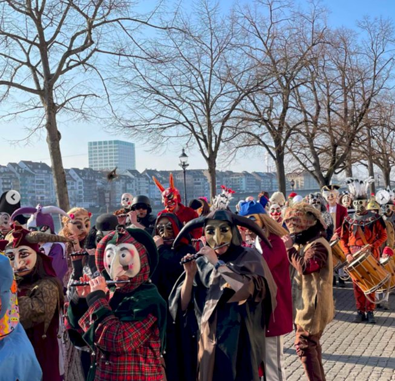
Geschichte der Fasnacht
Kurz gesagt stammt die Tradition aus dem Mittelalter und hat ihren Ursprung in der Fastenzeit vor Ostern, welche am Aschermittwoch begann. Die Fastenzeit war in diesem Zeitalter ein wichtiger Bestandteil der Gesellschaft und dauerte 40 Tage. Während der folgenden Tage des Fastens durften die Menschen täglich nur drei Bissen Brot und 3 Schluck Wasser oder Bier zu sich nehmen. Die Sonntage waren vom Fasten ausgenommen.
Vor dieser enthaltsamen Zeit sollte noch einmal richtig gefeiert werden, denn während dieser 6 Wochen durfte man natürlich auch keinen Alkohol trinken, da es von der Kirche untersagt wurde. Das Datum, wann die Fastenzeit beginnt, war immer auf einen Dienstag gelegt. 1091 wurde jedoch beschlossen, den Beginn auf den Aschermittwoch zu legen. Basel hat dies jedoch herzlich wenig interessiert und beließ es beim alten Termin.
Man könnte jetzt denken, dass die Fasnacht nur einen kirchlichen Ursprung hat. Dem ist jedoch nicht so, denn sie geht auch auf einen heidnischen Brauch zurück. Die Austreibung des Winters zum Beispiel. In Basel kann man Feste dieser Art seit dem 14. Jahrhundert nachweisen. 1529 wurde entschieden, dass man die Fasnacht auf Montag bis Mittwoch nach dem Aschermittwoch legt. Von diesem Jahr gibt es auch das älteste Zeugnis, welches den Handel und den Verkauf von «Larven» durch Maler und Händler belegt.
Das Volk lebte die Tradition mit Essen, Trinken und Festen aus. Der Adel hingegen veranstaltete auch edle Turniere auf dem Münsterpatz, wie das im Jahre 1376 von Herzog Leopold. Es hätte sich kein geeigneter Platz im Kleinbasel dafür gefunden und so wurde die dazumal fasnächtliche Veranstaltung ins Grossbasel verlegt. Als Waffen und Pferde in die Zuschauerränge gerieten, gab es grosse Tumulte. Das Turnier nahm ein blutiges Ende. 12 Bürger wurden hingerichtet. So spricht man Ende des 14. Jahrhunderts von der «bösen Fasnacht».
Vor dieser enthaltsamen Zeit sollte noch einmal richtig gefeiert werden, denn während dieser 6 Wochen durfte man natürlich auch keinen Alkohol trinken, da es von der Kirche untersagt wurde. Das Datum, wann die Fastenzeit beginnt, war immer auf einen Dienstag gelegt. 1091 wurde jedoch beschlossen, den Beginn auf den Aschermittwoch zu legen. Basel hat dies jedoch herzlich wenig interessiert und beließ es beim alten Termin.
Man könnte jetzt denken, dass die Fasnacht nur einen kirchlichen Ursprung hat. Dem ist jedoch nicht so, denn sie geht auch auf einen heidnischen Brauch zurück. Die Austreibung des Winters zum Beispiel. In Basel kann man Feste dieser Art seit dem 14. Jahrhundert nachweisen. 1529 wurde entschieden, dass man die Fasnacht auf Montag bis Mittwoch nach dem Aschermittwoch legt. Von diesem Jahr gibt es auch das älteste Zeugnis, welches den Handel und den Verkauf von «Larven» durch Maler und Händler belegt.
Das Volk lebte die Tradition mit Essen, Trinken und Festen aus. Der Adel hingegen veranstaltete auch edle Turniere auf dem Münsterpatz, wie das im Jahre 1376 von Herzog Leopold. Es hätte sich kein geeigneter Platz im Kleinbasel dafür gefunden und so wurde die dazumal fasnächtliche Veranstaltung ins Grossbasel verlegt. Als Waffen und Pferde in die Zuschauerränge gerieten, gab es grosse Tumulte. Das Turnier nahm ein blutiges Ende. 12 Bürger wurden hingerichtet. So spricht man Ende des 14. Jahrhunderts von der «bösen Fasnacht».
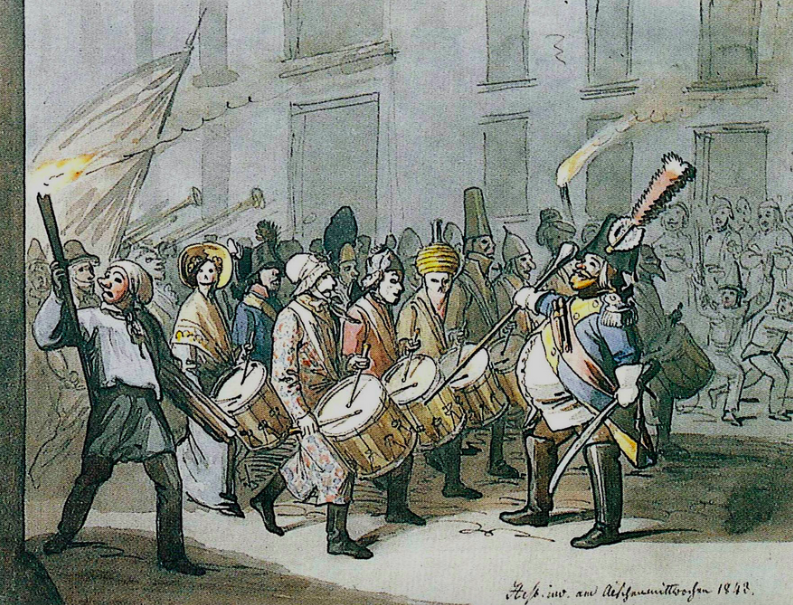
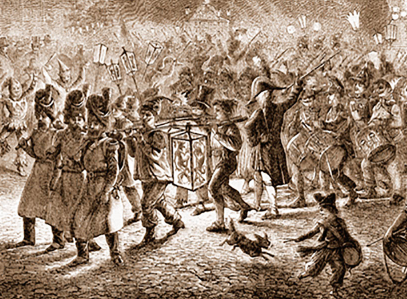
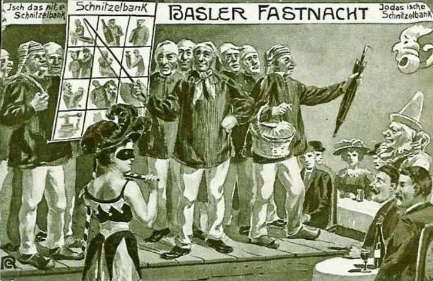
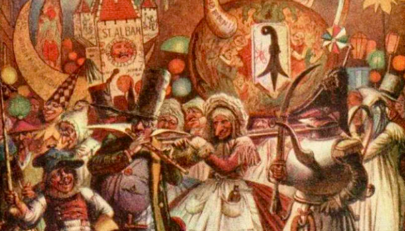
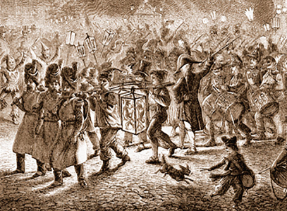
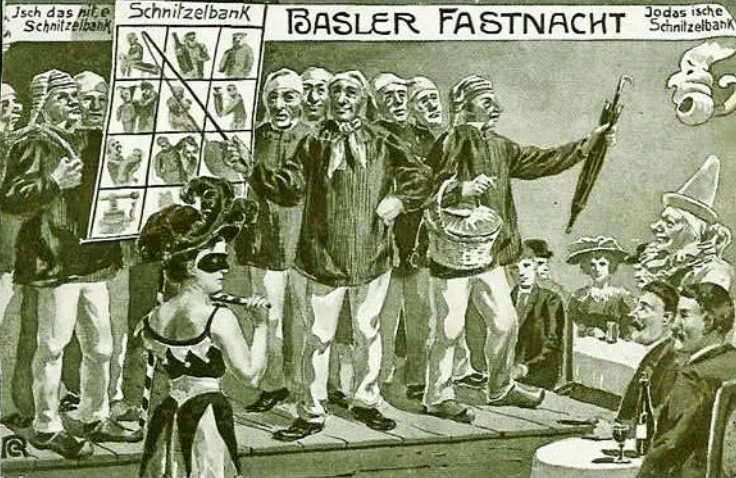
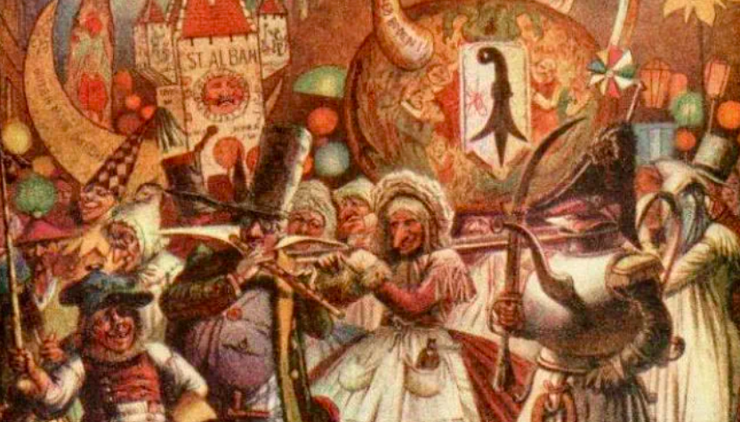
Ende des 15. Jahrhunderts entstanden die Umzüge, wie wir sie heute noch kennen.
Jedoch konnte sich der Adel von Basel immer noch nicht ganz mit dieser Tradition anfreunden und so wurde die Fasnacht Ende des 18. Jahrhunderts verboten. Der Grund: Sie könnte Systemkritik fördern. Es blieb daher auch nicht bei diesem einzigen Verbot.
In den 1830er Jahren begann sich die Presse für die Fasnacht zu interessieren. Damit gewann die Tradition erneut an Bedeutung. In diesem Jahrhundert wurde auch der erste Morgenstreich etabliert und ein paar Jahre danach die erste Zugslaterne mitgetragen.
Seit einem Vermummungsverbot aus dem 16. Jahrhundert war auch das Tragen von Larven verboten. Demnach durfte man erst seit 1890 wieder Larven tragen. Jedoch setzte die Reformation der Fasnacht zeitweilig ein schnelles Ende. Die Fasnacht kam aber mit den Jahren wieder auf. 1911 wurde das bis heute bestehende Fasnachts-Comité gegründet. Es war auch in diesem Jahr als die erste «Blaggedde» eingeführt wurde. Ein paar Jahre später, mitten während des ersten Weltkrieges, liess man die Fasnacht erneut aus. Das «Monstre» wurde jedoch erlaubt, welches auf ein Trommelkonzert zurückgeht und heute «Drummeli» heisst.
Nach dem Krieg fand 1920 wieder die erste Fasnacht statt. Während dieser Pause entstanden die Cliquenkeller. Die Fasnacht, so wie wir sie heute kennen, fand ihre geregelte Form. Die Fasnacht entwickelte sich stetig weiter und hatte jedes Jahr neue Veränderungen, bis heute. Erst ab 1950 wurde die Basler Innenstadt während den «Drey scheenste Dääg» verkehrsfrei. 1962 gab es eine Abmachung, dass die Guggenmusiken nicht mehr am Morgenstreich spielen dürfen. Der Dienstag wurde zum Tag für die Guggen. So fand die Fasnacht die Form, wie wir sie heute kennen.
In den 1830er Jahren begann sich die Presse für die Fasnacht zu interessieren. Damit gewann die Tradition erneut an Bedeutung. In diesem Jahrhundert wurde auch der erste Morgenstreich etabliert und ein paar Jahre danach die erste Zugslaterne mitgetragen.
Seit einem Vermummungsverbot aus dem 16. Jahrhundert war auch das Tragen von Larven verboten. Demnach durfte man erst seit 1890 wieder Larven tragen. Jedoch setzte die Reformation der Fasnacht zeitweilig ein schnelles Ende. Die Fasnacht kam aber mit den Jahren wieder auf. 1911 wurde das bis heute bestehende Fasnachts-Comité gegründet. Es war auch in diesem Jahr als die erste «Blaggedde» eingeführt wurde. Ein paar Jahre später, mitten während des ersten Weltkrieges, liess man die Fasnacht erneut aus. Das «Monstre» wurde jedoch erlaubt, welches auf ein Trommelkonzert zurückgeht und heute «Drummeli» heisst.
Nach dem Krieg fand 1920 wieder die erste Fasnacht statt. Während dieser Pause entstanden die Cliquenkeller. Die Fasnacht, so wie wir sie heute kennen, fand ihre geregelte Form. Die Fasnacht entwickelte sich stetig weiter und hatte jedes Jahr neue Veränderungen, bis heute. Erst ab 1950 wurde die Basler Innenstadt während den «Drey scheenste Dääg» verkehrsfrei. 1962 gab es eine Abmachung, dass die Guggenmusiken nicht mehr am Morgenstreich spielen dürfen. Der Dienstag wurde zum Tag für die Guggen. So fand die Fasnacht die Form, wie wir sie heute kennen.
Fasnacht/Karneval auf der ganzen Welt
Als Karneval, Fastnacht, Fassenacht, Fasnacht, Fasnet, Fasching, Fastabend, Fastelovend, Fasteleer oder fünfte Jahreszeit bezeichnet man die Bräuche, mit denen die Zeit vor der vierzigtägigen Fastenzeit ausgelassen gefeiert wird. Die Fastenzeit beginnt mit dem Aschermittwoch und dient der Vorbereitung auf das Osterfest.
Der Karneval wird sehr unterschiedlich begangen: Karnevalsumzüge, Musik, Masken und das Verkleiden spielen eine Rolle. Eine ganz eigenständige Vitalität entwickelte der Karneval in Lateinamerika, etwa beim Karneval von Oruro oder dem Karneval in Rio. Bekannt sind auch der Karneval in Venedig, in Kanada der Karneval von Québec, der Mittfasten-Karneval am Sonntag Laetare in Stavelot und anderen Orten der belgischen Ostkantone, sowie in Spanien der Karneval von Santa Cruz de Tenerife und der Karneval in Cádiz. Auch in den Südstaaten der Vereinigten Staaten gibt es eine ausgeprägte Karnevalstradition. Man verwendet etwa in New Orleans die französische Bezeichnung Mardi Gras (Fetter Dienstag, Fastnachtsdienstag). Der Karneval in Namibia findet an verschiedenen Orten des Landes statt und hat keinen zeitlichen Bezug zur Fastenzeit mehr. Im deutschen Sprachraum sind „Hochburgen“ das Rheinland und die schwäbisch-alemannische Fastnacht.
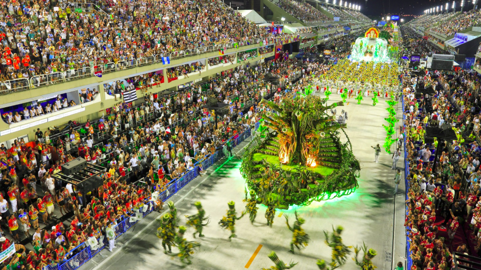 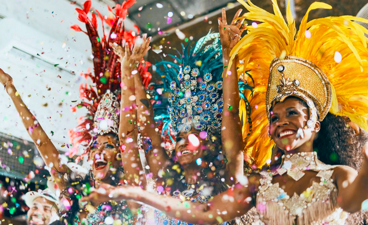 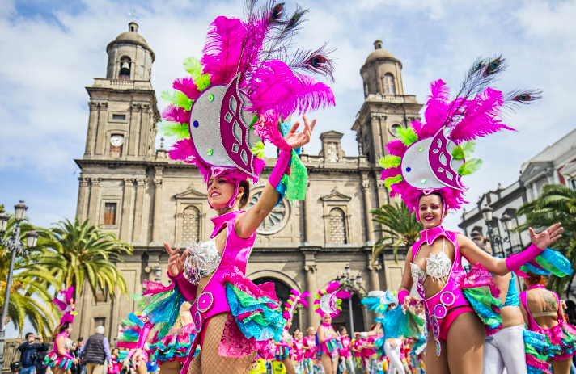 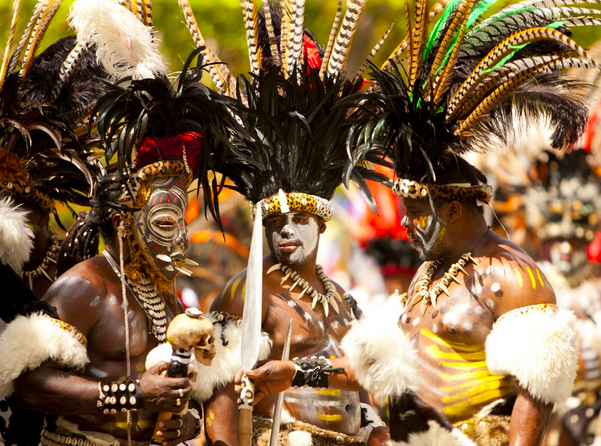 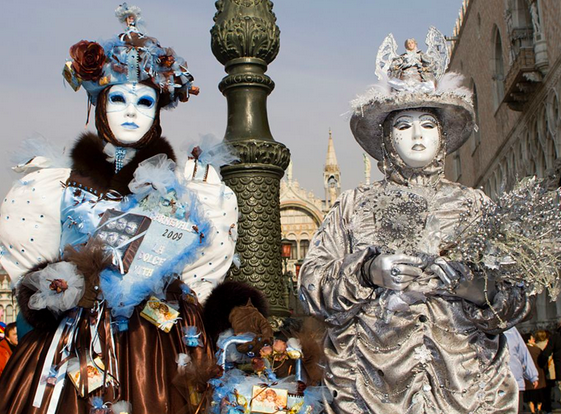 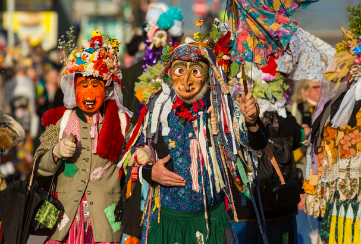
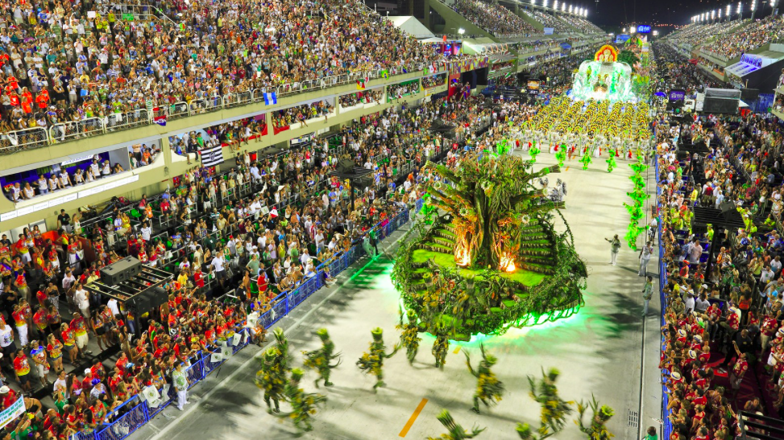 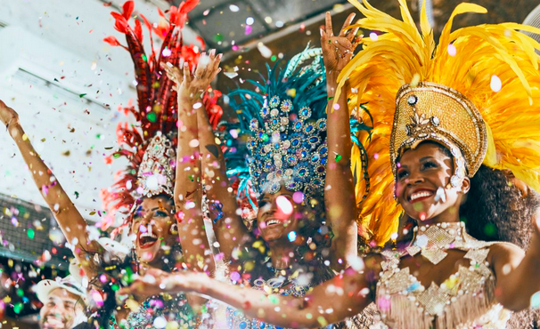 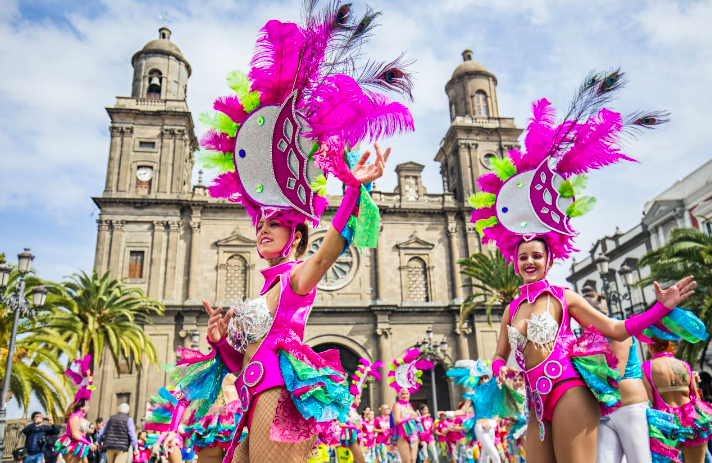 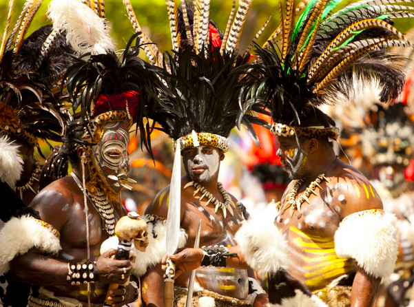 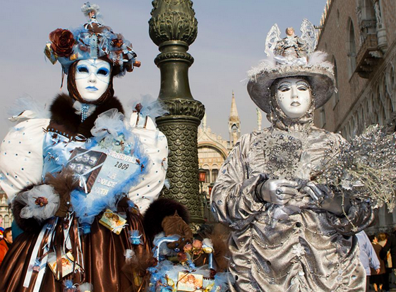 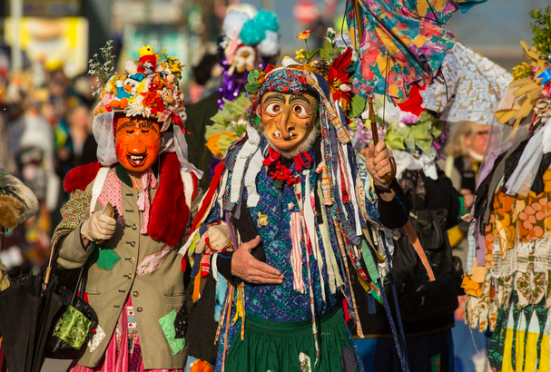